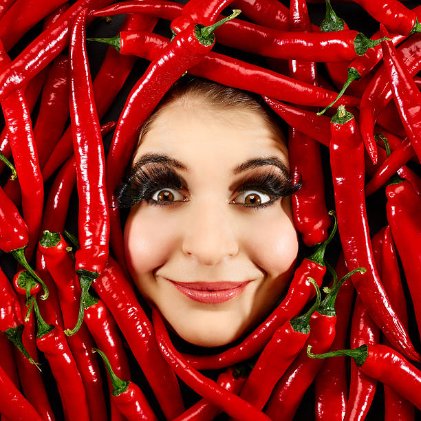

1. Chilling = Less Spreading. Cold dough holds its shape better, giving you thick, chewy cookies instead of flat, sad ones 😥.
2. More Flavor. Letting the dough sit allows the flavors to develop—kind of like marinating meat 🤣!
3. Better Texture. The sugar has time to absorb moisture, leading to that crispy edge & soft center we all love 😍.
Short on time? Chill for at least 30 minutes. But if you can, overnight is the best 😚!
 SweetTreatsMama
| May 31
SweetTreatsMama
| May 31
The Cookie Dough Dilemma - To Chill or Not to Chill?
SweetTreatsMama
| Nov 17
edited
Too Many Cookies... Help!
Okay, I may have gone a bit overboard baking this weekend. 😅 My kitchen currently looks like a dessert factory, and I’m running out of counter space.
@DadCooksDaily, do your kids want some extra cookies? Because mine are on a sugar high, and I can’t handle another round of “but Mom, just one more!!†😵â€ğŸ’«
#BakingProblems #HelpMeEatThese #CookieOverload
@DadCooksDaily, do your kids want some extra cookies? Because mine are on a sugar high, and I can’t handle another round of “but Mom, just one more!!†😵â€ğŸ’«
#BakingProblems #HelpMeEatThese #CookieOverload
 DadCooksDaily
| Jan 9
DadCooksDaily
| Jan 9
🗠Easy One-Pan Garlic Butter Chicken 🕺
Busy dads (and moms), this one's for you! A quick, no-fuss meal that’s packed with flavor and ready in under 30 minutes. Perfect for those hectic evenings when the little ones are running around!
Ingredients:
2 chicken breasts (or thighs for extra juiciness)
3 tbsp butter
4 cloves garlic, minced
1 tsp paprika
1/2 tsp salt & pepper
1/2 tsp dried thyme
1/2 tsp chili flakes (optional)
1/2 cup chicken broth
1 tbsp lemon juice
Instructions:
1️⃣ Season chicken with salt, pepper, paprika, and thyme.
2️⃣ Heat 1 tbsp butter in a pan over medium heat. Sear chicken on both sides until golden (about 4-5 mins per side). Remove & set aside.
3️⃣ In the same pan, add remaining butter and garlic. Sauté until fragrant.
4️⃣ Pour in chicken broth and lemon juice. Let it simmer for 2 mins, then add chicken back in.
5️⃣ Simmer for another 5 mins until chicken is cooked through. Spoon sauce over the top & enjoy!
Serve with rice, mashed potatoes, or veggies. My kids love it with roasted potatoes! Let me know if you try it! 🍽️
#DadCooksDaily #EasyDinners #HomeCooking #OnePanMeals
Ingredients:
2 chicken breasts (or thighs for extra juiciness)
3 tbsp butter
4 cloves garlic, minced
1 tsp paprika
1/2 tsp salt & pepper
1/2 tsp dried thyme
1/2 tsp chili flakes (optional)
1/2 cup chicken broth
1 tbsp lemon juice
Instructions:
1️⃣ Season chicken with salt, pepper, paprika, and thyme.
2️⃣ Heat 1 tbsp butter in a pan over medium heat. Sear chicken on both sides until golden (about 4-5 mins per side). Remove & set aside.
3️⃣ In the same pan, add remaining butter and garlic. Sauté until fragrant.
4️⃣ Pour in chicken broth and lemon juice. Let it simmer for 2 mins, then add chicken back in.
5️⃣ Simmer for another 5 mins until chicken is cooked through. Spoon sauce over the top & enjoy!
Serve with rice, mashed potatoes, or veggies. My kids love it with roasted potatoes! Let me know if you try it! 🍽️
#DadCooksDaily #EasyDinners #HomeCooking #OnePanMeals

 GrillMasterMike
| Feb 8
GrillMasterMike
| Feb 8
🥩 Smoked Brisket – Low & Slow is the Way to Go! 🔥
Took me years to perfect this, but once you get it right, it’s a game-changer. Here’s my foolproof brisket method:
Ingredients:
12-14 lb whole beef brisket
1/4 cup coarse salt
1/4 cup black pepper
1 tbsp garlic powder
1 tbsp smoked paprika
Instructions:
1️⃣ Trim excess fat, leaving about 1/4 inch.
2️⃣ Rub brisket with salt, pepper, garlic powder & paprika.
3️⃣ Smoke at 225°F for 10-12 hours (until internal temp hits 203°F).
4️⃣ Wrap in butcher paper at 165°F for that perfect bark!
5️⃣ Let it rest for at least 1 hour before slicing.
Patience = juicy, tender brisket. 🤠🔥
#BBQLife #SmokedMeats #GrillSeason
Ingredients:
12-14 lb whole beef brisket
1/4 cup coarse salt
1/4 cup black pepper
1 tbsp garlic powder
1 tbsp smoked paprika
Instructions:
1️⃣ Trim excess fat, leaving about 1/4 inch.
2️⃣ Rub brisket with salt, pepper, garlic powder & paprika.
3️⃣ Smoke at 225°F for 10-12 hours (until internal temp hits 203°F).
4️⃣ Wrap in butcher paper at 165°F for that perfect bark!
5️⃣ Let it rest for at least 1 hour before slicing.
Patience = juicy, tender brisket. 🤠🔥
#BBQLife #SmokedMeats #GrillSeason

TheSpicySpoon
| Sept 29
I Have Made a Terrible Mistake… 🌶️🔥💀
🚨 SEND HELP. 🚨 I just ate a whole Carolina Reaper, and I am currently reconsidering every life decision I have ever made. I thought I could handle it. I thought, "I eat spicy food all the time, I’ll be fine!" NO. I WAS NOT FINE.
Currently debating whether to chug a bottle of ranch dressing or just jump into a pool and hope for the best. Pray for me. 🙃🔥💦
#SpiceRegret #SendMilk #NeverAgain (jk, probably again)
Currently debating whether to chug a bottle of ranch dressing or just jump into a pool and hope for the best. Pray for me. 🙃🔥💦
#SpiceRegret #SendMilk #NeverAgain (jk, probably again)
 ChefInTrainingEm
| Dec 3
ChefInTrainingEm
| Dec 3
My First Attempt at Homemade Pasta! 🍝
Okay, making fresh pasta from scratch is WAY harder than I thought. 😅 My kitchen is covered in flour, my arms are sore from kneading, and somehow there’s dough on my dog?? BUT… after a few failed attempts, I finally made a plate of silky, buttery fettuccine, and I feel like a real chef! 👩‍🍳✨
Next time, I’ll roll it thinner (because wow, my first batch was chunky 😂), but I’m calling this a win! Anyone have pasta-making tips for a beginner? 🍝
#ChefInTraining #HomemadePasta #FlourEverywhere
Next time, I’ll roll it thinner (because wow, my first batch was chunky 😂), but I’m calling this a win! Anyone have pasta-making tips for a beginner? 🍝
#ChefInTraining #HomemadePasta #FlourEverywhere